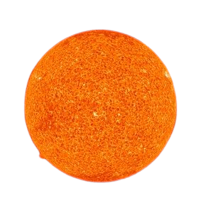

Nuestro sol es una bola brillante y caliente de hidrógeno y helio en el centro de nuestro sistema solar. Tiene un diámetro de 864.000 millas (1.392.000 km), 109 veces más ancho que la Tierra. Es 10.000 grados Fahrenheit (5.500 grados Celsius) en la superficie, y 27 millones de grados Fahrenheit (15.000.000 grados centígrados) en el núcleo. ¡Impresionante! Nuestro sol es muy impresionante, pero cómo se compara con otras estrellas? Hay miles de millones de estrellas más en la galaxia de la Vía Láctea - la galaxia que es nuestro hogar. Y hay muchos más en el resto del universo. ¿Es nuestro sol algo especial?
